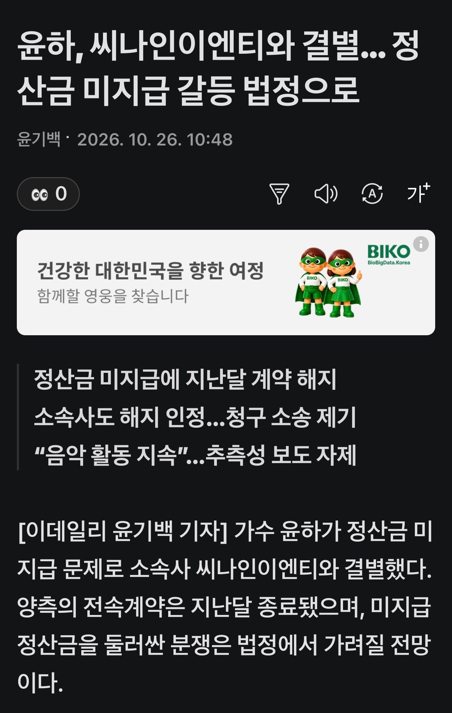

https://v.daum.net/v/20261026104829419?from=newsbot&botref=KN&botevent=e
5년동안 9억정도 미정산 받았다고 ㄷㄷ

https://v.daum.net/v/20261026104829419?from=newsbot&botref=KN&botevent=e
5년동안 9억정도 미정산 받았다고 ㄷㄷ
이전 소속사랑도 문제있었는데 이 누나는 소속사복이 없네
지금도 사자 이후여서, 사실상 데뷔 이후 소속사가 다 문제임...
또?;;
소속사 조심해라 벨트푼다
9억이면 사건의지평선 정산도 안됐나보네
누나 이참에 벨트로 환영검무 한번 시원하게 갈깁시다
어쩐지 콘서트를 안하더라 씁
씨나인=c9=철구
위얼라이브 차려서 혼자할때 참 조앗는데 C9으로 합병되고 나서는 좀 삐걱거렸나보네
ㄷㄷㄷ